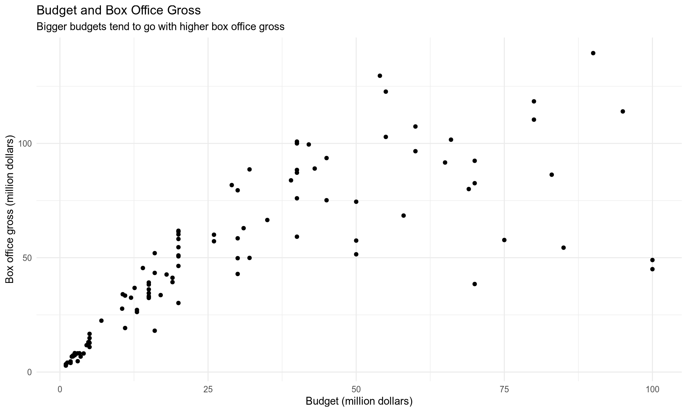
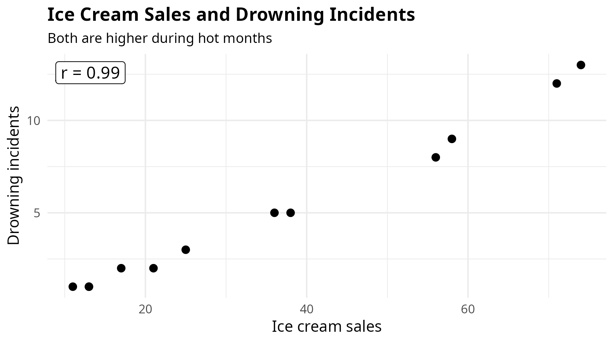
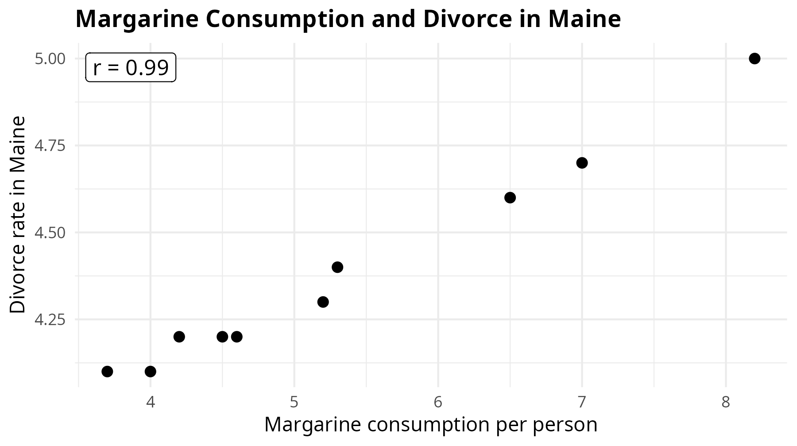
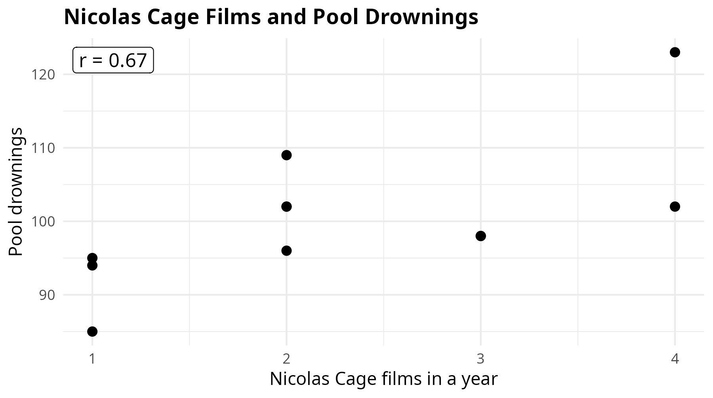

- 1
- Use the tidyverse for plotting.
- 2
- Read the CSV file from GitHub.
- 3
-
Save it in R’s memory with the name
horror_movies.
Today we will ask questions like:
It tells us two things:
Correlation is about the overall pattern in the data.
As one variable increases, the other variable tends to increase too.
Examples:
The points usually move upward from left to right.
As one variable increases, the other variable tends to decrease.
Examples:
The points usually move downward from left to right.
Example:
Movie title length and IMDb score
The points look like a cloud with no clear direction.
The formula for Pearson’s correlation coefficient is:
\[ r = \frac{\sum (x_i - \bar{x})(y_i - \bar{y})} {\sqrt{\sum (x_i - \bar{x})^2 \sum (y_i - \bar{y})^2}} \]
\[ -1 \leq r \leq 1 \]
The formula compares how \(x\) and \(y\) move around their own averages.
Today we first understand correlation by looking at scatter plots.
Then we also look at the numeric value of \(r\) to see the actual correlation.
Why?
For two numeric variables, we use a scatter plot.
Today we will use a prepared movie dataset based on an IMDb movie dataset.
Each row is one movie.
The dataset includes movie titles, release years, budgets, box office gross, and IMDb scores.
It also includes extra details such as duration, number of votes, faces on the poster, content rating, and genre.
# A tibble: 103 × 14
movie_title release_year budget_million gross_million profit_multiplier
<chr> <int> <dbl> <dbl> <dbl>
1 Friday the 13th … 1981 1.25 4.11 3.29
2 The Howling 1981 1 2.93 2.93
3 Friday the 13th … 1982 4 8.12 2.03
4 Halloween III: S… 1982 2.5 8.28 3.31
5 A Nightmare on E… 1984 1.8 3.98 2.21
6 Firestarter 1984 15 36.2 2.41
7 Friday the 13th:… 1984 1.8 4.64 2.58
8 A Nightmare on E… 1985 2.2 6.84 3.11
9 Friday the 13th:… 1985 2.2 7.24 3.29
10 Jason Lives: Fri… 1986 3 4.74 1.58
# ℹ 93 more rows
# ℹ 9 more variables: title_length <int>, imdb_score <dbl>,
# duration_minutes <int>, votes_thousand <dbl>, faces_on_poster <int>,
# movie_facebook_likes <int>, main_genre <chr>, genres <chr>,
# content_rating <chr>The first variables identify the movie:
movie_title: name of the movierelease_year: year the movie was releasedThe main numeric variables are:
budget_million: movie budget in millions of dollarsgross_million: box office gross in millions of dollarsprofit_multiplier: gross divided by budgettitle_length: number of characters in the movie titleimdb_score: IMDb user scoreThe other variables give extra context, such as duration, votes, and genre.
Do bigger-budget horror movies earn more money at the box office?
Do bigger-budget horror movies earn a better return per dollar?
Do movies with longer titles get higher IMDb scores?
Before making the plots, what do you expect for each relationship?
Question: Do bigger-budget horror movies earn more money at the box office?
Take our data set named horror_movies.
Now send this data set to ggplot().
Question: Do bigger-budget horror movies earn more money at the box office?
For a scatter plot, we need two numeric variables.
For the first question:
x = budget_milliony = gross_millionQuestion: Do bigger-budget horror movies earn more money at the box office?
For scatter plots we use geom_point().
Each row in the data becomes one point.
Question: Do bigger-budget horror movies earn more money at the box office?
Each point is one horror movie.
Movies further to the right have bigger budgets.
Movies higher up earned more at the box office.
The points generally move upward from left to right.
That suggests a positive correlation.
Question: Do bigger-budget horror movies earn more money at the box office?
Now we add a title and axis labels.
Question: Do bigger-budget horror movies earn more money at the box office?

Question: Do bigger-budget horror movies earn more money at the box office?
This means:
Horror movies with bigger budgets tend to have higher box office grosses.
The pattern is visible in the points.
Question: Do bigger-budget horror movies earn more money at the box office?
Now we can calculate the correlation number.
The correlation is about 0.78.
The sign is positive, and the magnitude is strong.
So we describe this as a strong positive correlation.
Question: Do bigger-budget horror movies earn a better return per dollar?
Now we ask a different question.
Here profit_multiplier means:
box office gross divided by budget
For example, profit_multiplier = 5 means the movie earned 5 dollars in gross for every 1 dollar of budget.
Question: Do bigger-budget horror movies earn a better return per dollar?
First we make the default scatter plot.
Question: Do bigger-budget horror movies earn a better return per dollar?
Question: Do bigger-budget horror movies earn a better return per dollar?
This means:
In this horror movie dataset, bigger budgets tend to have lower return per dollar.
This is a negative correlation.
Small-budget horror films can sometimes be very efficient at the box office.
Question: Do bigger-budget horror movies earn a better return per dollar?
The correlation is about -0.77.
The sign is negative, and the magnitude is strong.
So we describe this as a strong negative correlation.
Question: Do movies with longer titles get higher IMDb scores?
Now we ask a different question:
For this plot:
x = title_lengthy = imdb_scoreQuestion: Do movies with longer titles get higher IMDb scores?
First we make the default scatter plot.
Question: Do movies with longer titles get higher IMDb scores?
Question: Do movies with longer titles get higher IMDb scores?
The points do not clearly move upward.
The points do not clearly move downward.
They look more like a loose cloud.
This suggests no clear correlation.
A longer title does not automatically make a better movie.
Question: Do movies with longer titles get higher IMDb scores?
The correlation is about -0.07.
The value is close to zero, so the magnitude is very weak.
So we describe this as no clear correlation.
| Variables | Pattern | Meaning |
|---|---|---|
budget_million and gross_million |
Positive | bigger budget, higher box office gross |
budget_million and profit_multiplier |
Negative | bigger budget, lower return per dollar |
title_length and imdb_score |
No clear pattern | title length is not clearly related to IMDb score |
Same type of plot. Different relationships.

The hidden variable is usually hot weather: people buy more ice cream and spend more time swimming.
Ice cream sales do not cause drowning incidents.

This example was popularized by Tyler Vigen’s spurious correlations.
Margarine probably does not cause divorce in Maine.

Sometimes the relationship is just a coincidence.
A correlation can look interesting even when there is no believable causal story.
But we should not immediately say:
A bigger budget automatically causes a movie to earn more.
That may sound reasonable, but the scatter plot alone does not prove it.
The relationship may involve other variables:
Some of these factors may affect budget, box office gross, or both.
A careful sentence is:
In this dataset, horror movies with bigger budgets tend to have higher box office grosses.
And then we add:
This is a positive correlation, not proof that budget alone causes higher gross.
Correlation looks at the relationship between two numeric variables.
We start with a scatter plot: geom_point().
Positive correlation: the points move upward from left to right.
Negative correlation: the points move downward from left to right.
No clear correlation: the points form a cloud with no clear direction.
Correlation is not causation.
One of your friends notices something while scrolling through movie posters:
“Maybe movies with more faces on the poster get higher IMDb scores.”
Using horror_movies, investigate the relationship between faces_on_poster and imdb_score.
Make a scatter plot, calculate the correlation value \(r\), and interpret the sign and magnitude.
The most important sentence:
“There is a strong / weak / no clear positive or negative correlation, but this does not prove causation.”
Correlation